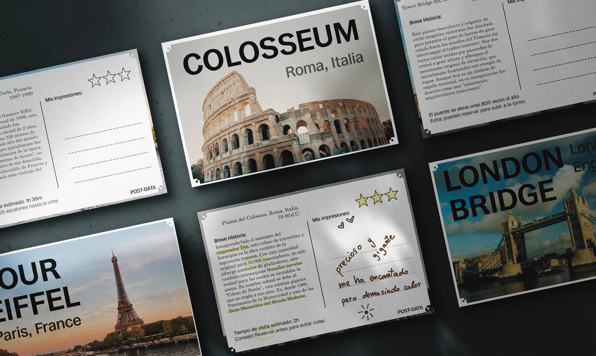
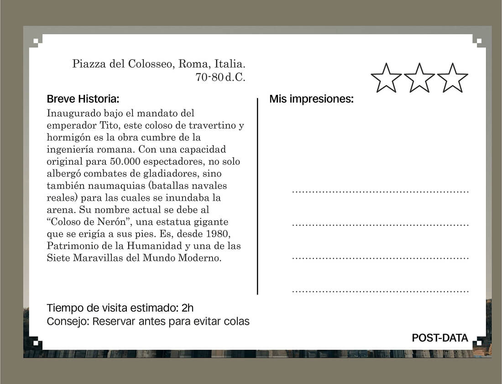
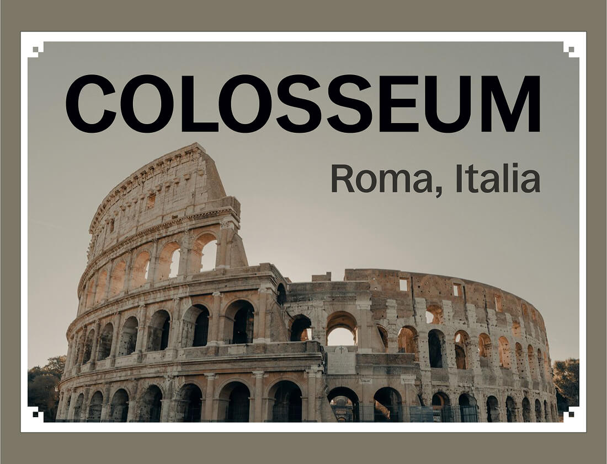
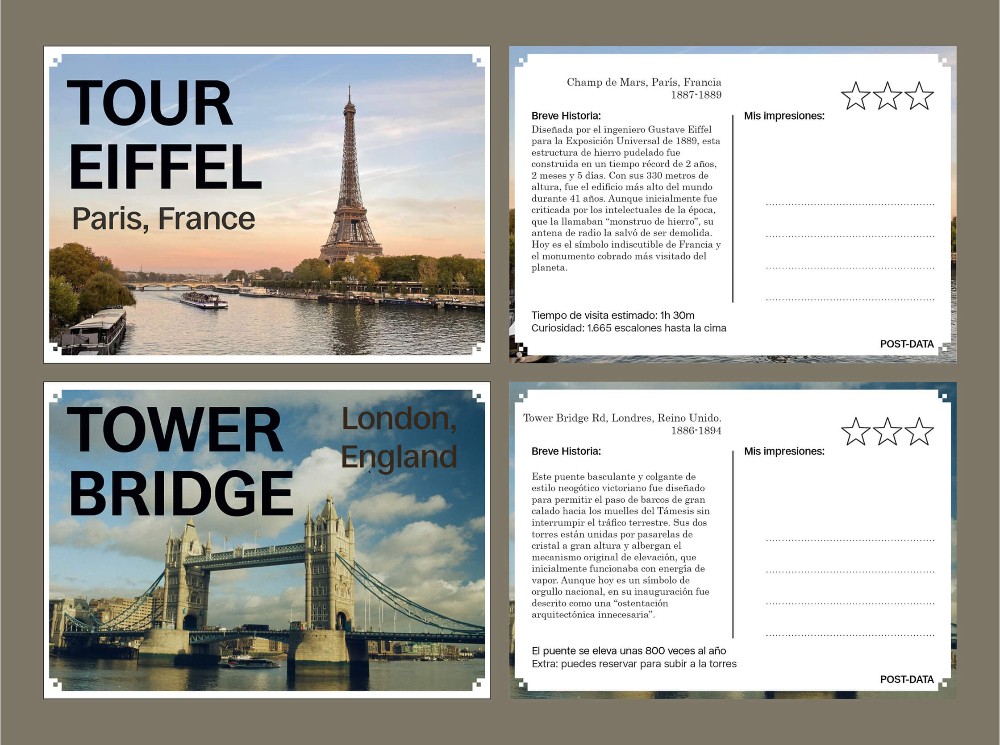

Post-Data: Guide & Postcard
2026
University Project

Post-Data was born from the intersection between a traditional postcard and a travel guide. It is a product that provides essential information about a historical landmark while leaving a dedicated space on the right side for your personal impressions and thoughts, creating a truly unique and personalized souvenir.


After analyzing the essential elements of both objects, I arrived at a functional visual solution: a scalable visual identity. This design system can easily be adapted to different cities and landmarks, allowing the project to grow into a broader collection.
